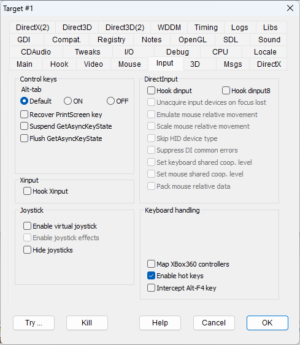

|
Alt-tab |
NODISABLEALTTAB DISABLEALTTAB |
A program may try to control the behavior of the Alt-Tab sequence by placing a keyboard hook and filtering this key sequence. The radio button allows to leave this unaltered (DEFAULT) or bypass the program's attempt to disable Alt-Tab (ON) or disable the Alt-Tab sequence (OFF). |
|
Recover PrintScreen key |
NODISABLEPRINT |
A program may try to disable the PrintScreen key by placing a keyboard hook and filtering this key sequence. This flag bypasses the program's attempt to disable the PrintScreen key. |
|
Suspend GetAsyncKeyState |
FIXASYNCKEYSTATE |
A program may detect keyboard and mouse events (pressed keys, mouse buttons pressed) by using the GetAsyncKeyState call that always works, no matter if the program is currently active or not. In case of fullscreen applications, that may do little difference but when running in the windowed mode, the detection of key states may cause a unwanted reaction from the program while clicking on top of another window. This flag inhibits the asynchronous detection of key states while the program is not active. In particular, this flag was designed to fix GOG's patch for "Wizards and Warriors", which meant to ensure a mouse click reaction, but that had the side effect of making the game react to clicks on other windows. |
|
Flush GetAsyncKeyState |
FLUSHKEYSTATE |
A program may detect keyboard and mouse events (pressed keys, mouse buttons pressed) by using the GetAsyncKeyState that returns key states from messages read in the message queue. Some programs may handle this incorrectly, processing key states that are queued and therefore showing a delayed control. This flag ensures that before each new read of a keystate, the message queue is flushed (emptied) from all the old keystate messages. |
|
Hook dinput |
HOOKDI |
Hooks DirectInput libraries, making sure that the DirectInput modes are appropriate for a non-fullscreen program and enabling all other flags in the same group. |
|
Hook dinput8 |
HOOKDI8 |
Hooks DirectInput8 libraries, making sure that the DirectInput8 modes are appropriate for a non-fullscreen program and enabling all other flags in the same group. |
|
Unacquire devices on focus lost |
UNACQUIRE |
Unacquires DirectInput/DirectInput8 devices when they lose focus and acquire them back when they regain focus. This option should be set if the program using DirectInput libraries keeps listening to the mouse input even when the program's window is inactive, or when it keeps ignoring mouse input even when the program's window becomes active once again. |
|
Emulate mouse relative movement |
EMULATERELMOUSE |
Emulates the DirectInput detection of relative mouse position by keeping the mouse at the center of the window and looking for movements. It should be used whenever the native DirectInput mechanism doesn't work properly. |
|
Scale mouse relative movement |
SCALERELMOUSE |
Scales the mouse relative movement when "Emulate mouse relative movement" flag is set. This can compensate for some sensitivity problem caused by the window scaling. |
|
Skip HID device type |
SKIPDEVTYPEHID |
Newer versions of Windows may have access to new types of HIDs (human interface devices) that can interfere with old games which can only recognize the three traditional devices (mouse, keyboard, and joystick). This flag masks the presence of such devices. It fixes a crash in the game "Jetboat Superchamps 2", the only known game that requires this setting. |
|
Suppress DI common errors |
SUPPRESSDIERRORS |
This flag forces some DirectInput operations to return a successful completion rather than an error even in the event of a failure. Some programs work more reliably with this flag turned on. |
|
Set keyboard shared coop. level |
SHAREDKEYBOARD |
Forces DirectInput cooperative level to NONEXCLUSIVE mode for the keyboard device. Use this flag when the program shows DirectInput errors related to keyboard access. The game "Planet of the Apes" can't process the PrintScreen key without this flag. |
|
Set mouse shared coop. level |
SHAREDMOUSE |
Forces DirectInput cooperative level to NONEXCLUSIVE mode for the mouse device. Use this flag when the program shows DirectInput errors related to mouse access, or when it is not possible to use the mouse outside the controlled game window. |
|
Pack mouse relative data |
PACKMOUSEDATA |
Experimental function. When DirectInput receives multiple packets of mouse relative movement, their value is summarized into a single couple of packets representing the overall x and y movement. |
|
Hook xinput |
HOOKXINPUT |
Preliminary XInput Xbox 360 controller emulation. |
|
Enable virtual joystick |
VIRTUALJOYSTICK |
Some games require a joystick. If a joystick is not connected, this flag emulates a rudimentary joystick, controlled by the mouse movement. The X and Y axes are controlled by the mouse movement, the two primary joystick buttons are controlled by left and right click, and the joystick centering function is controlled by the middle mouse button (if available). The joystick's position and its button states are shown in a cross-shaped viewfinder that overlaps the game window. See Virtual Joystick for configuration details. |
|
Enable joystick effects |
JOYSTICKEFFECTS |
When set, this flag makes the virtual joystick to emulate the support of joystick effects. Of course, the effects can't be implemented for execution on a mouse device, but DxWnd will fake a proper effect reaction to the calling program. The flag requires that both the HOOKDINPUT and VIRTUALJOYSTICK flags are enabled and will emulate only those reactions of HID devices interfaced by DirectInput methods. |
|
Hide joysticks |
HIDEJOYSTICKS |
This flag tries to hide the joystick from the game. |
|
Map XBox360 controllers |
XBOX2KEYBOARD |
The flag enables a mapping of up to 4 XBox360 controller buttons to keyboard keys. The key definition is held in the file keymap.ini that must be edited and dropped in the working folder of each task that enables this functionality. See the sample keymap.ini file for a description of the file syntax. In addition to the provided examples, the key definitions can also be expressed in decimal or hexadecimal format, making it possible to represent any possible keyboard value. |
|
Enable hot keys |
ENABLEHOTKEYS |
DxWnd can set some special keys (e.g., Alt+Fn) to trigger special actions, storing the key association in the "dxwnd.ini" file. This flag enables the hot key definitions. If unchecked, all the hot keys are disabled for the running program. |
|
Intercept Alt-F4 key |
HANDLEALTF4 |
Intercepts the Alt-F4 key in the message processing loop to immediately terminate the program, avoiding any programmed exit procedure (cinematics, save state warnings, ads...). It only has an effect if the game is in a message processing loop. |
|
XBox to Keyboard mapping |
XBOX2KEYBOARD |
Enables a very basic remapper that intercepts the button events of a XBox360 controller and remaps these events into keyboard events according to a customizable configuration file keymap.ini. |